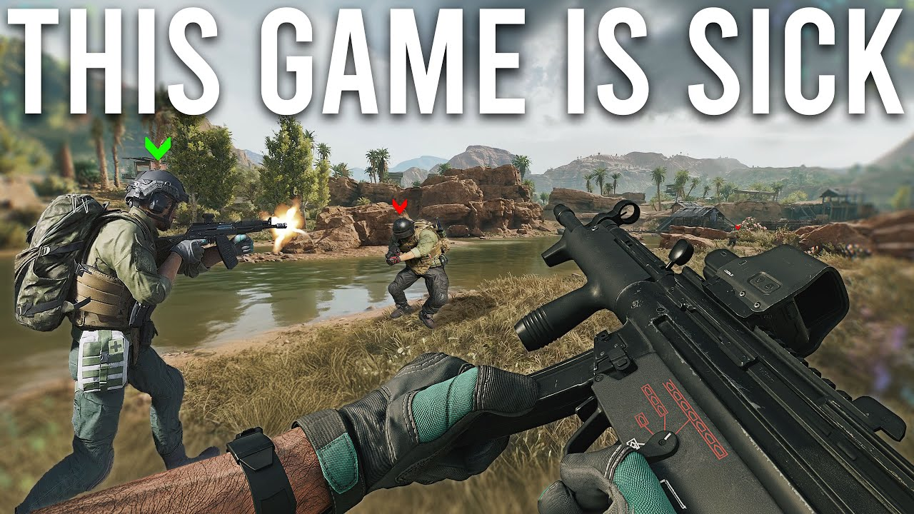
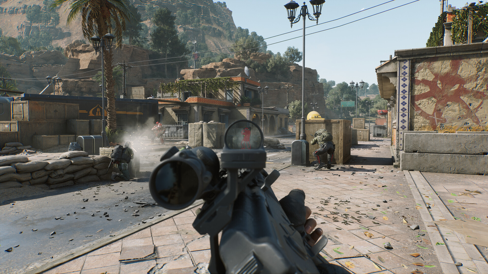

❮
❯
Delta Force is a free-to-play first-person shooter
developed by TiMi J3 Studio,
a division of TiMi Studio Group,
and serves as a reboot of the classic Delta Force series.
The game became available
in open beta for PC on December 5, 2024, and
officially launched on January 20, 2025 https://www.playdeltaforce.com/en/ .
Valorant is a free-to-play tactical first-person shooter developed by Riot Games and released on June 2, 2020.
The game features a 5v5 format where players choose from a roster of agents, each with unique abilities,
and engage in objective-based gameplay, primarily involving planting or defusing a spike.
With precise gunplay, strategic team coordination, and a ranked competitive mode,
Valorant has become one of the most popular esports titles worldwide https://playvalorant.com/en-us/ .
Minecraft is a sandbox game developed by Mojang Studios and released in 2011. It allows players to explore a procedurally generated world, gather resources, and build structures. The game offers various modes, including Survival, Creative, and Adventure, making it one of the best-selling games of all time https://www.minecraft.net/en-us .
Grand Theft Auto V is an action-adventure game developed by Rockstar North and published by Rockstar Games. Set in the fictional state of San Andreas, it follows three protagonists as they commit heists while under pressure from a government agency https://www.rockstargames.com/gta-v .
Super Mario Bros. 3 is a platform game developed and published by Nintendo for the NES in 1988 (Japan) and 1990 (worldwide). It follows Mario and Luigi on a quest to save Princess Toadstool and the Mushroom Kingdom from Bowser and his seven Koopalings. The game introduces world maps, new power-ups like the Super Leaf (which grants Mario the ability to fly as Raccoon Mario), and diverse levels filled with hidden secrets. With its polished gameplay, creative level design, and lasting influence on the Mario series, Super Mario Bros. 3 is widely regarded as one of the greatest video games of all time https://www.mariowiki.com/Super_Mario_Bros._3 .